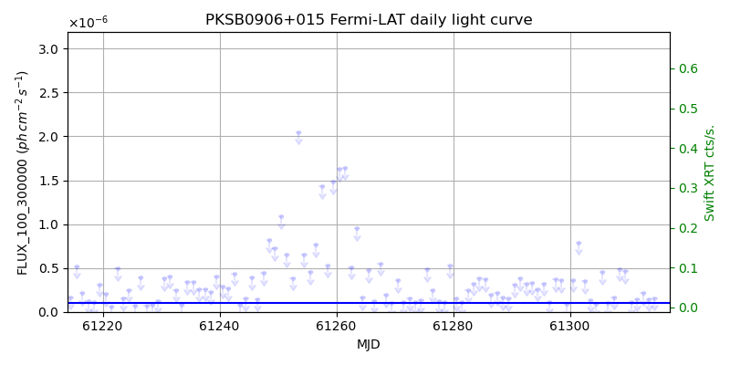
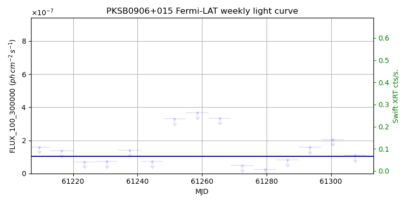
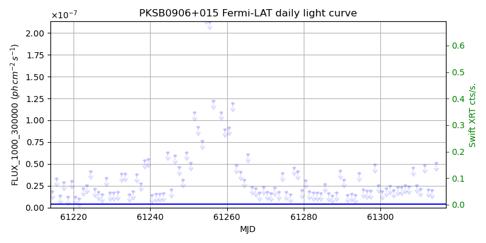
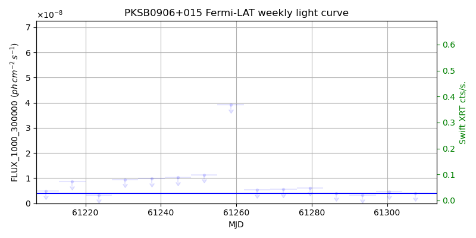

LAT Lightcurve site: https://fermi.gsfc.nasa.gov/ssc/data/access/lat/msl_lc/source/PKS_B0906p015
Swift site: https://www.swift.psu.edu/monitoring/source.php?source=PKSB0906+015
NED: Query
Time of last update of this page: UT: 2026-10-02 15:20 (MJD: 61315.639)
| Property | Value |
|---|---|
| R.A. | 9:09:10.08 |
| Dec. | 1:21:36.0 |
| z | 1.023 |
| 3FGL SpectrumType | LogParabola |
| 3FGL PL Index | |
| 3FGL Flux_100_300000 | 1.03e-07 1 / (s cm2) |
| 3FGL Flux_1000_300000 | 4.01e-09 1 / (s cm2) |
| 3FGL Flux >200 GeV | 2.34e-13 1 / (s cm2) |
| 3FGL Extrap. Crab >200 GeV | 0.00 |
| 3FGL Flux After EBL Absorption >200GeV | 4.49e-15 1 / (s cm2) |
| 3FGL EBL Crab Fraction >200GeV | 0.00 |

| MJD | dMJD | Flux | dFlux | Frac3FGL | FracCrab>200GeV | EBLFracCrab>200GeV |
|---|---|---|---|---|---|---|
| 61310.50 | 0.50 | 1.13e-07 | 0.00e+00 | 0.00 | 0.00 | 0.00 |
| 61311.50 | 0.50 | 1.45e-07 | 0.00e+00 | 0.00 | 0.00 | 0.00 |
| 61312.50 | 0.50 | 2.13e-07 | 0.00e+00 | 0.00 | 0.00 | 0.00 |
| 61313.50 | 0.50 | 1.46e-07 | 0.00e+00 | 0.00 | 0.00 | 0.00 |
| 61314.50 | 0.50 | 1.55e-07 | 0.00e+00 | 0.00 | 0.00 | 0.00 |

| MJD | dMJD | Flux | dFlux | Frac3FGL | FracCrab>200GeV | EBLFracCrab>200GeV |
|---|---|---|---|---|---|---|
| 61279.50 | 3.50 | 2.50e-08 | 0.00e+00 | 0.00 | 0.00 | 0.00 |
| 61286.50 | 3.50 | 8.06e-08 | 0.00e+00 | 0.00 | 0.00 | 0.00 |
| 61293.50 | 3.50 | 1.58e-07 | 0.00e+00 | 0.00 | 0.00 | 0.00 |
| 61300.50 | 3.50 | 2.06e-07 | 0.00e+00 | 0.00 | 0.00 | 0.00 |
| 61307.50 | 3.50 | 1.09e-07 | 0.00e+00 | 0.00 | 0.00 | 0.00 |

| MJD | dMJD | Flux | dFlux | Frac3FGL | FracCrab>200GeV | EBLFracCrab>200GeV |
|---|---|---|---|---|---|---|
| 61310.50 | 0.50 | 2.17e-08 | 0.00e+00 | 0.00 | 0.00 | 0.00 |
| 61311.50 | 0.50 | 4.88e-08 | 0.00e+00 | 0.00 | 0.00 | 0.00 |
| 61312.50 | 0.50 | 2.10e-08 | 0.00e+00 | 0.00 | 0.00 | 0.00 |
| 61313.50 | 0.50 | 1.98e-08 | 0.00e+00 | 0.00 | 0.00 | 0.00 |
| 61314.50 | 0.50 | 5.13e-08 | 0.00e+00 | 0.00 | 0.00 | 0.00 |

| MJD | dMJD | Flux | dFlux | Frac3FGL | FracCrab>200GeV | EBLFracCrab>200GeV |
|---|---|---|---|---|---|---|
| 61279.50 | 3.50 | 6.14e-09 | 0.00e+00 | 0.00 | 0.00 | 0.00 |
| 61286.50 | 3.50 | 4.05e-09 | 0.00e+00 | 0.00 | 0.00 | 0.00 |
| 61293.50 | 3.50 | 3.33e-09 | 0.00e+00 | 0.00 | 0.00 | 0.00 |
| 61300.50 | 3.50 | 4.77e-09 | 0.00e+00 | 0.00 | 0.00 | 0.00 |
| 61307.50 | 3.50 | 4.07e-09 | 0.00e+00 | 0.00 | 0.00 | 0.00 |
--------------------------------------------------------- Using user-supplied coords: 9:09:10.08 1:21:36.0 2000 --------------------------------------------------------- FLWO UT night of: 2026-10-03 Local Sid. @ Midnight: 00:24 Sunset (-15.0) (local, UT): 19:14 02:14 Sunrise (-15.0) (local, UT): 05:12 12:12 Moonrise (local, UT): 22:48 05:48 Moonset (local, UT): Moon phase: 0.53 --------------------------------------------------------- AzTime LSID UT Obj_el Obj_az Mn_el Mn_az Sep. --------------------------------------------------------- 19:14 19:37 02:14 -50.3 321.7 -28.5 20.1 48.6 19:44 20:07 02:44 -53.8 332.5 -26.2 26.7 48.2 20:14 20:37 03:14 -56.1 345.0 -23.2 32.8 47.9 20:44 21:07 03:44 -57.1 358.6 -19.6 38.5 47.5 21:14 21:37 04:14 -56.5 12.3 -15.7 43.6 47.2 21:44 22:07 04:44 -54.4 25.1 -11.3 48.4 46.9 22:14 22:37 05:14 -51.1 36.3 -6.5 52.7 46.6 22:44 23:07 05:44 -46.9 45.8 -0.8 56.7 46.3 23:14 23:37 06:14 -42.0 53.8 3.8 60.4 46.0 23:44 00:07 06:44 -36.6 60.6 9.1 63.9 45.7 00:14 00:38 07:14 -30.9 66.5 14.6 67.1 45.5 00:44 01:08 07:44 -24.9 71.6 20.3 70.2 45.2 01:14 01:38 08:14 -18.8 76.3 26.1 73.1 45.0 01:44 02:08 08:44 -12.5 80.6 32.1 76.0 44.8 02:14 02:38 09:14 -6.0 84.7 38.1 78.8 44.6 02:44 03:08 09:44 0.7 88.7 44.2 81.7 44.4 03:14 03:38 10:14 6.7 92.6 50.3 84.8 44.2 03:44 04:08 10:44 13.1 96.7 56.5 88.1 44.0 04:14 04:38 11:14 19.4 100.9 62.7 91.9 43.8 04:44 05:08 11:44 25.6 105.5 68.9 96.9 43.6 05:12 05:37 12:12 31.4 110.2 74.7 103.8 43.4 --------------------------------------------------------- Dark hours >55 deg.: 0.00